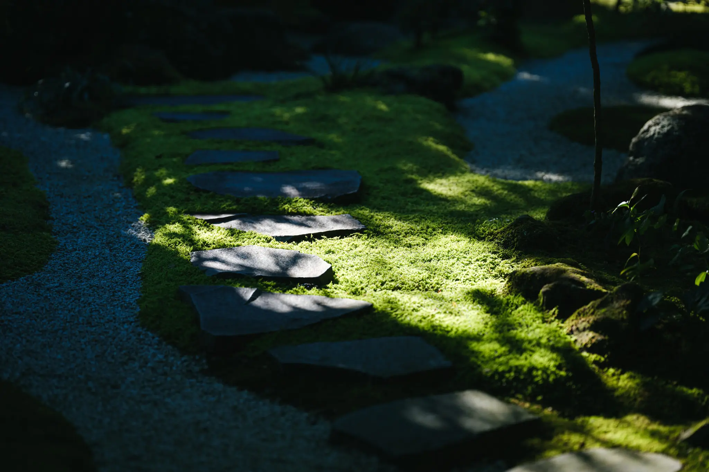
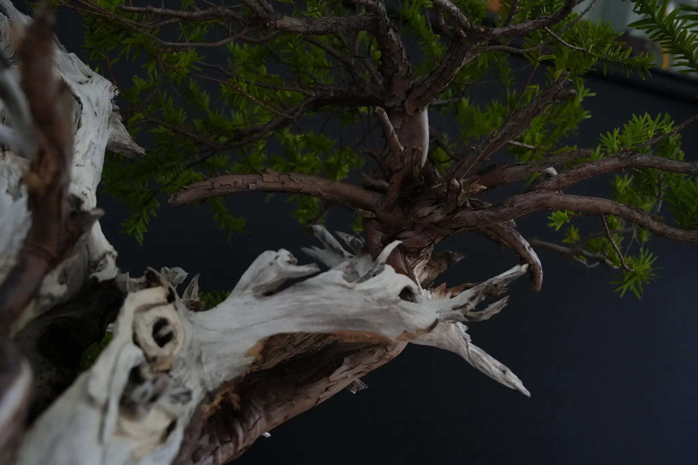

The Essence of Wabi-Sabi

At the heart of the art of bonsai lies the ancient Japanese spirit of Wabi-Sabi. Wabi-Sabi is a uniquely Japanese aesthetic cultivated over generations. "Wabi" speaks to finding beauty and depth in simplicity and quietness, while "Sabi" affirms the appreciation of aged and withered things, recognizing their graceful charm. It does not mourn the slow transformation that time brings; rather, it quietly accepts the present form as it is, honoring its inherent dignity. To feel the profound, wordless joy that lives within that acceptance is the very essence of Wabi-Sabi.
Bonsai and Wabi-Sabi

Within bonsai expression are many elegant styles and techniques—such as moyogi (informal upright) and chokkan (formal upright)—developed by artisans over time. The single purpose shared by all these forms is simple: through touching the tree, trimming with shears, and tending its water, one cultivates within oneself a rich sensibility that sees beauty in transience and in graceful aging.
The true enjoyment of bonsai resides in this spirit. Capturing the grandeur of nature inside a small pot, tending it with care for decades, conversing with the living material, and patiently facing it—bonsai is an art that affirms the flow of time itself.